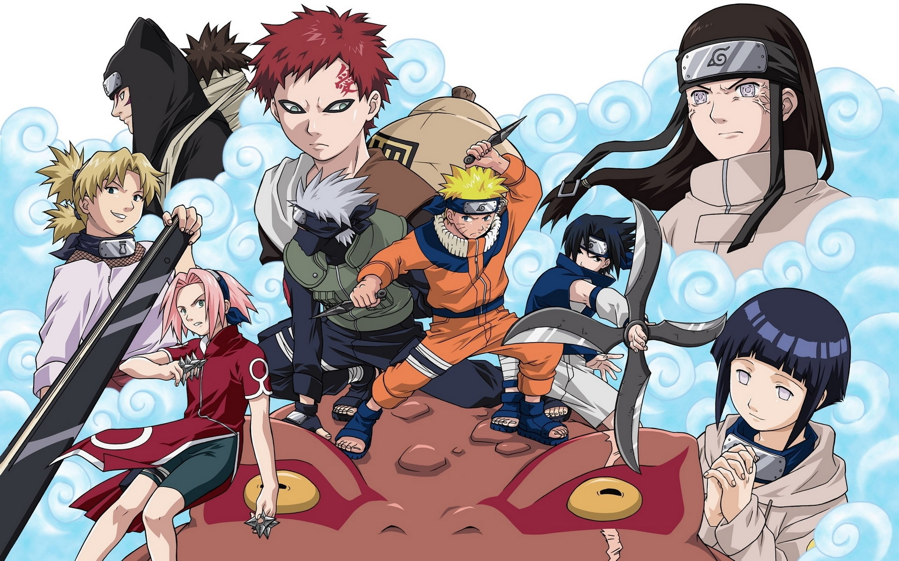

简介
讲述的是从小身上封印着邪恶的九尾妖狐、无父无母的鸣人受尽了村里人的冷落，为了让更多的人认可自己，鸣人立志要成为火影忍者。火影是世上最强的五位忍者之一的封号，也是木叶忍者村的首领。鸣人开始了艰辛坎坷的历程。

在卡卡西老师的带领下，鸣人与佐助、小樱一起踏上了修行之路。等待他们的将是无穷无尽的艰险挑战，而鸣人等人也在这生与死的较量中逐渐成长起来的故事。作者用世界上最强大的毅力和最艰辛的努力去做最密不可宣和隐讳残酷的事情的忍者们，描绘成了太阳下最值得骄傲最光明无限的职业。在岸本齐史笔下的忍者世界中，每一位年轻的忍者都在开拓着属于自己的忍道。
